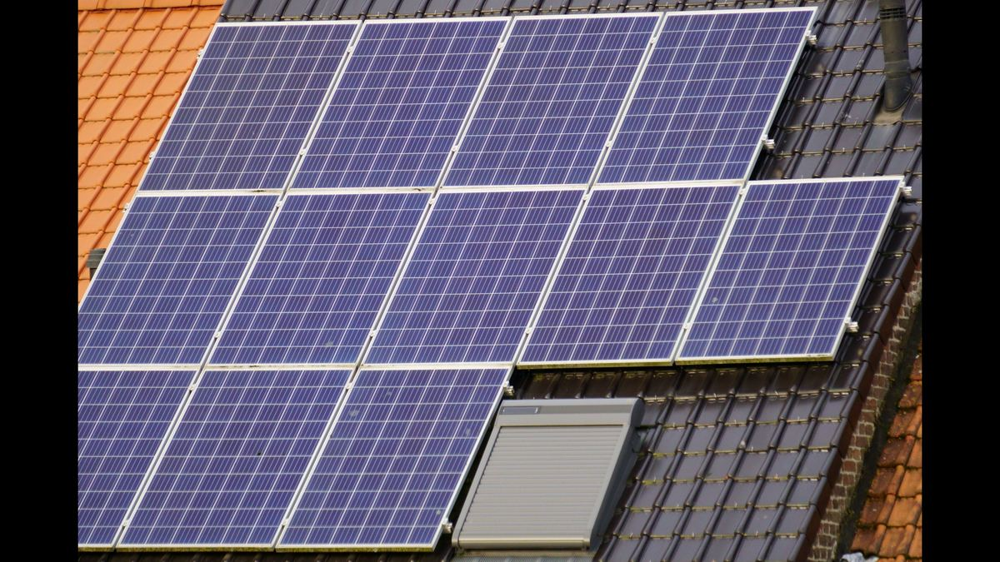

When people ask how long solar panels "last," what they really mean is how much power the panels still make years down the line. A panel rarely stops working; instead it gradually produces a little less each year. That slow decline is called degradation, and understanding its rate is the key to knowing what your system will really deliver in year 10, 20 or 25.
What is a typical degradation rate?
For modern crystalline silicon panels, the widely accepted figure is around 0.4 to 0.7 percent per year, after a slightly larger drop in the very first year. Manufacturers usually structure their performance warranty the same way: no more than about 2 to 3 percent loss in year one, then roughly 0.5 percent per year after that. Do the arithmetic and a panel still produces somewhere around 85 to 90 percent of its original power after 25 years — which is exactly what the warranty guarantees.
How much power is left over time?
At a steady 0.5 percent per year (ignoring the first-year step for simplicity), the numbers look like this:
- After 10 years: roughly 95 percent of the original output.
- After 20 years: roughly 90 percent.
- After 25 years: roughly 87 to 88 percent.
So a 400 W panel that loses about half a percent a year would still be putting out around 350 W after a quarter of a century. That's why a well-built system is treated as a 25-year-plus asset — the panels keep earning long after they've paid for themselves. You can see how this plays out for savings in our ROI calculator.
What causes panels to degrade?
Degradation isn't one thing — it's several slow processes running in parallel:
- UV and heat. Years of sunlight and thermal cycling slowly break down the plastic encapsulant that seals the cells. The classic visible sign is yellowing of the EVA, often starting at the edges of the panel.
- Micro-cracks. Thermal expansion, wind load and rough handling create tiny cracks in the silicon cells that reduce active area over time.
- Corrosion. Where moisture works past the seal, contacts and solder joints corrode, raising resistance and cutting output.
- Light-induced degradation (LID). A small, one-off drop in the first weeks of sun exposure, already baked into the first-year figure.
Hot, high-UV climates push every one of these along faster. That's the difference between the tidy datasheet number and what you actually measure on a roof in the Middle East — a point our guide on solar panels in hot climates covers in more depth.
On one project in Amman, installed in 2018, the modules were Philadelphia-brand panels rated at 250 W. Measuring one of them today, roughly eight years on, the output had fallen to about 220 W — a total loss of around 12 percent, or close to 1.5 percent per year. There was light yellowing of the encapsulant along the edges of the panel, the visible fingerprint of UV and heat ageing. That rate is a little steeper than the datasheet's ideal figure, which is exactly what you expect from an older-generation panel that has spent eight summers under strong Jordanian sun.
Why real-world rates beat the datasheet
The 8-year Amman measurement — about 1.5 percent per year — sits above the 0.5 percent a modern warranty promises, and there's no contradiction in that. Older panel generations degraded faster than today's; strong sun and high roof temperatures accelerate ageing; and a single field measurement carries some uncertainty from irradiance and temperature at the moment of testing. The lesson isn't that panels are worse than advertised — it's that you should design with a realistic rate for your climate, not just the best-case lab number. For hot regions, budgeting slightly higher degradation keeps your long-term energy estimates honest.
Estimate your own decline
To project how a specific panel will fade, feed its wattage and an annual rate into the panel degradation calculator — it shows the remaining output year by year. Pair it with the energy production calculator to see how those losses translate into kilowatt-hours, and read our companion guide on how long solar panels last for the bigger picture on lifespan and warranties.
Frequently asked questions
How much do solar panels degrade per year?
Most modern crystalline panels lose about 0.4 to 0.7 percent per year after a slightly larger first-year drop, leaving roughly 85 to 90 percent of their power after 25 years. Older panels and hot climates can degrade faster.
How much power does a solar panel lose after 25 years?
At about 0.5 percent per year, a panel keeps around 87 to 88 percent of its original output at 25 years. Warranties typically guarantee at least 80 to 87 percent — so a 400 W panel would still make roughly 350 W.
What causes solar panels to degrade?
UV and heat breaking down the encapsulant (seen as yellowing), micro-cracks in the cells, corrosion of contacts, and a small light-induced drop early on. Hot, high-UV climates speed all of these up.
How do you measure a solar panel's degradation?
Measure the panel's power under known sunlight, correct for irradiance and temperature, and compare it to its nameplate rating. Divide the percentage gap by the panel's age to get an approximate annual rate.